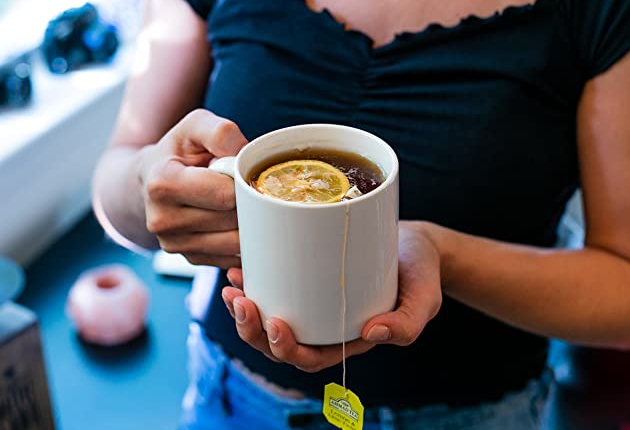
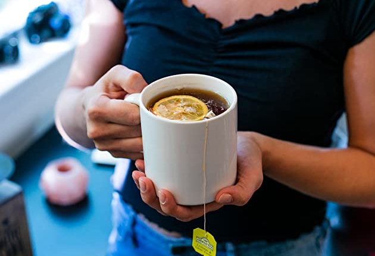
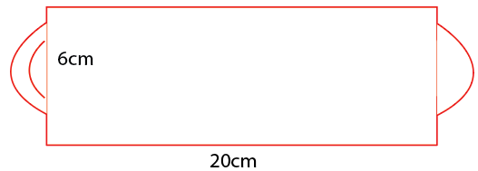

6.810 Engineering Interactive Technologies (fall 2020)
Problem Set
 

Problem Set Series: Interactive Mug
In the package you will receive next week, we are going to provide you with the coffee mug shown below, so you can always sip on your favorite drink while attending 6.810. As you can see, the mug is completely blank.
In this problem set series, we are going to augment this coffee mug with touch buttons, sliders, and other elements to control your favorite music from Spotify. Create a 2D design that contains the circuit you would like to apply to the mug.
The 2D design should contain at least one touch button and one touch slider as described below.
We will then print out your 2D design with the conductive inkjet printer and you will receive it in the mail hopefully by next week.
Problem Set 1: Circuit Design
Create the circuit design in your drawing program that you would like to apply to the mug.
Your mug should at least offer the following functionality: increase/decrease volume, pause/play song, go to the next/previous song, select one of your five favorite playlists.
The pause/play needs to use a touch button and the increase/decrease volume needs to use a touch slider. For the other functionalities you can decide if you prefer to use buttons, sliders, or dials.
Grading
We will give 25 pts in total:
- 5 pts: size and functionality complete (does the design fit onto the mug, is there an input element for each of the functionalities)
- 10 pts: circuit design correctness (are the elements correctly wired, are the wires the correct thickness, does each wire have a connector pad of sufficient size, are the connector pads arranged so they can easily connect to the micro-controller in one shared spot without wire chaos)
- 5 pts: usability (are the input elements large enough to be operated by a finger, are the elements appropriately spaced and distributed over the surface to avoid cross-touching between elements)
- 5 pts: complexity of the design (creativity of the idea, uniqueness of the shapes, overall design)
Template File
You can use this 2D template file which gives you an idea of the size of the mug.
The template file represents the entire outside surface of the mug to get a sense of the size of your design.

Example Design
To give you an idea what we are looking for, you can see an example design below.
{kind=link}